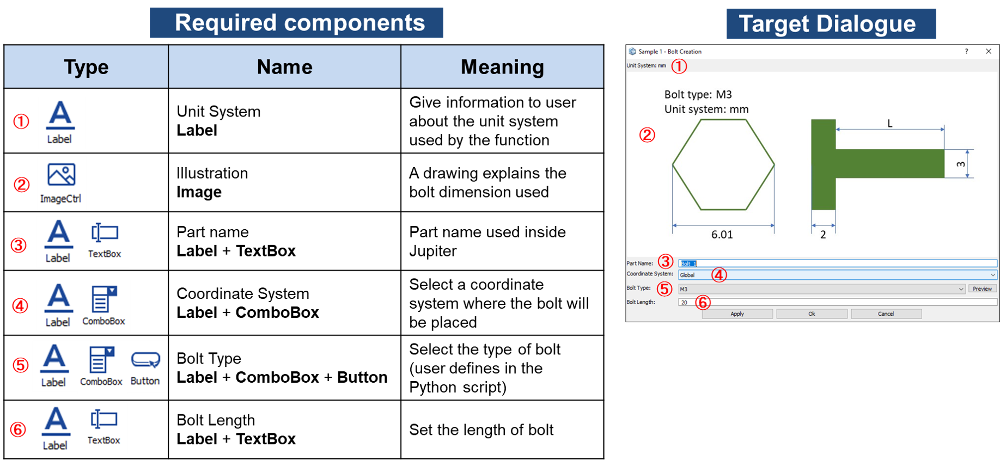

Creating a standard bolt¶
This tutorial demonstrates how to make a custom bolt using a pre-defined template by using Jupiter macro. Finally, it will integrates the macro to a custom UI using GUI Command Builder.
New topic covered
Understand how to get and make use of Jupiter macro
Implement the Jupiter macro to a general Python script for automatic process
Create a dialogue using GUI Command Builder
Intergrate the user’s script in (2.) to the dialogue made in (3.) to make a custom UI function
Add the custom UI function to Jupiter’s ribbon and start using it
Overview¶
In this tutorial, user will make a UI dialoge to embed the Jupiter’s customized Python macro for automatic work.
After user selects the bolt’s size and press Apply or OK button (left figure), a user-standard bolt will be made and show in Jupiter’s screen (right figure).
{kind=link}
Procedure¶
Get Macro: Run Jupiter available functions to get the respective Macro
Create def function in Python: Combine Macro with Python based script in order to create a full user function
Create User Interface (UI): Use GUI Command Builder to make a UI dialogue connecting to the user function
Implement: Register the new UI dialogue to Jupiter software
Get Macro¶
Creating 2 cylinders¶
Using Geometry > Create Entity > Part > Cylinder function to make 2 cylinders in sequence: one for bolt head, another for bolt body.
{kind=link}
User then can see the bolt created in Jupiter’s screen:
Fig. 3 Get macro¶
as well as the corresponded macro in Macro window:
CreateCylinderFrustum([0, 0, 0], 0.003, 0.003, 0.002, 36, 10, "Head", 12999622, 0:0)
CreateCylinderFrustum([0, 0.002, 0], 0.0015, 0.0015, 0.01, 36, 10, "Body", 7731705, 0:0)
Creating assemble face¶
Then, using Assemble > Assemble > Assemble Faces to make to cylinder share one same face (this would help mesh continue between 2 parts).
Fig. 4 Assemble¶
A corresponded macro in Macro window will be generated:
AssembleFaceMatingStep([], [], [3:1, 3:2], 0.0003)
Merging 2 parts¶
Next, using Geometry > Edit Entity > Merge Entities > Parts to merge 2 cylinders into 1 body. This part will be considered as a simple bolt geometry used in this tutorial.
Fig. 5 Merge 2 parts¶
A corresponded macro in Macro window will be generated:
MergePart(1e-08, 1, [3:2, 3:1])
Create DEF function in Python¶
To recap, below is the total macro collected in the above steps:
1 2 3 4 5 | CreateCylinderFrustum([0, 0, 0], 0.003, 0.003, 0.002, 36, 10, "Head", 12999622, 0:0)
CreateCylinderFrustum([0, 0.002, 0], 0.0015, 0.0015, 0.01, 36, 10, "Body", 7731705, 0:0)
AssembleFaceMatingStep([], [], [3:1, 3:2], 0.0003)
MergePart(1e-08, 1, [3:2, 3:1])
RenameItem("BOLT", 3:2)
|
To execute the code into Python, use the format of
JPT.Exec(“Macro”)Using the above script, now parameterize the numbers and add some built-in Python functions (if…else, for, while, etc.) to make the script adapt to different input parameters.
In this sample, the def function <on_execute_button_clicked()> is responsible for implementing the OK or Apply button.
def on_execute_button_clicked(dlg, part_name, coord_system, bolt_type, bolt_length):
Note
The Macro is added to create the bolt according to the value generated by user. From now, user can combine the knowledge about Python language and just generated Macro to create def function

See also
Further informaiton
For further information on creating the def function in Python, please refer to the comments in the sample code
Sample code: CreateBolt.py
Create User Interface (UI)¶

Open GUI Command Builder: Python ribbon > Python Script in Jupiter > GUI Command Builder